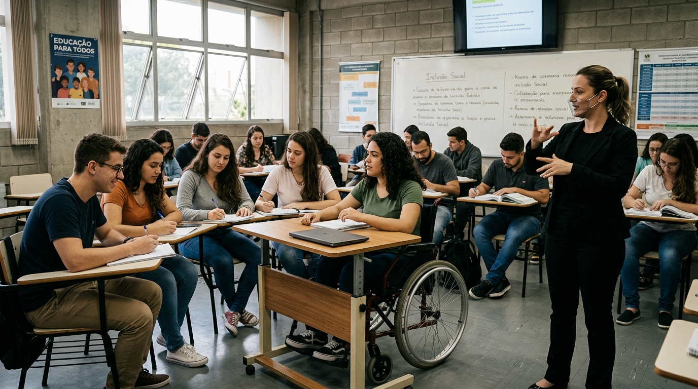

Acessibilidade na escola e no trabalho
Estudar e trabalhar são direitos de todas as pessoas. Para isso acontecer, escolas e empresas precisam remover barreiras físicas, de comunicação e de atitude.

Educação inclusiva
A Lei Brasileira de Inclusão garante um sistema educacional inclusivo em todos os níveis, com o objetivo de que cada estudante desenvolva seus talentos e habilidades. As escolas particulares também são obrigadas a incluir, e não podem cobrar valor extra nas mensalidades por causa da deficiência.
Recursos que fazem diferença
- Intérprete de Libras e materiais em Libras para estudantes surdos.
- Braille, textos ampliados e áudio para estudantes cegos ou com baixa visão.
- Legendas e transcrições em vídeos e aulas gravadas.
- Tecnologia assistiva: leitores de tela, softwares de ampliação, teclados e mouses adaptados.
- Atendimento Educacional Especializado (AEE), que complementa o ensino com apoio específico, no contraturno.
- Tempo adicional e provas adaptadas, quando a pessoa precisa.
- Espaços acessíveis: rampas, elevadores, banheiros adaptados e carteiras que servem para todos.
No mundo do trabalho
Segundo o IBGE, em 2022 apenas cerca de 29% das pessoas com deficiência estavam ocupadas no Brasil, bem menos que a população em geral. Entre os motivos estão as barreiras de acesso, a falta de adaptação nas empresas e o preconceito.
Lei de Cotas
A Lei nº 8.213/1991 obriga empresas com 100 ou mais empregados a contratar pessoas com deficiência ou reabilitadas pelo INSS:
| Número de empregados | Vagas reservadas |
|---|---|
| De 100 a 200 | 2% |
| De 201 a 500 | 3% |
| De 501 a 1.000 | 4% |
| Acima de 1.000 | 5% |
Adaptações razoáveis
A lei chama de adaptação razoável as mudanças que permitem à pessoa trabalhar em igualdade com as demais. Alguns exemplos:
- mesa, cadeira e computador ajustados à necessidade da pessoa;
- leitor de tela, ampliador de tela, teclado ou mouse adaptado;
- intérprete de Libras ou legendas em reuniões e treinamentos;
- informações e instruções por escrito, de forma clara;
- horário flexível ou trabalho remoto, quando ajudam;
- rotas de saída e alarmes de emergência acessíveis.
Atitude também é acessibilidade
As barreiras atitudinais, como o preconceito e o capacitismo, costumam ser as mais difíceis de remover. Capacitismo é tratar a pessoa com deficiência como menos capaz, incapaz ou digna de pena.
- Use o termo “pessoa com deficiência”. Expressões como “portador de deficiência” e “deficiente” estão ultrapassadas.
- Evite elogios que expressam surpresa, como “nossa, você trabalha mesmo assim?”.
- Pergunte à pessoa do que ela precisa, em vez de decidir por ela.
- Foque nas habilidades e no que a pessoa pode fazer.